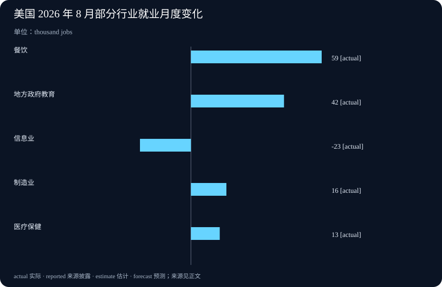

Daily Intelligence
2026-09-05 · Saturday · 信息截止 07:10（Asia/Shanghai）
Today’s Thesis｜把 AI 搬到边缘，不等于把信任问题解决
边缘 AI 将延迟、主权与离线能力带到客户现场，也把运行时、模型、检索资料、凭据和物理设备的验证责任一起下放；真正可扩展的做法不是要求模型“更听话”，而是用证明、策略闸门和可撤销授权把不确定输出限制在可控动作内。就业数据同时提示，数字基础设施扩张与广泛劳动需求并不会自动同步。
Executive Summary｜执行摘要
- 微软 9 月 4 日发布边缘 AI 安全架构文章，指出客户自有环境把模型、数据和系统权限置于同一现场，攻击面包括提示注入、模型篡改、恶意固件、检索资料污染和工具配置。文章提出运行时证明、产物来源、确定性中介与敏感资产按证据释放。来源
- 文章明确区分“模型建议动作”和“系统授权动作”：外部确定性中介应限制允许的操作、参数、频率和凭据，高后果或不可逆动作仍需独立批准或故障安全机制。这是厂商提出的架构建议，并非跨行业实证成效。来源
- BLS 公布 8 月美国非农就业增加 16.2 万，失业率维持 4.1%；过去 12 个月月均新增仅 3.1 万。6 月和 7 月合计上修 5.5 万，说明初值仍会变化。来源
- 行业分化明显：餐饮增加 5.9 万、地方政府教育增加 4.2 万，信息业减少 2.3 万，其中计算基础设施、数据处理和托管相关服务减少 0.8 万。单月分类变化不能识别 AI、周期、组织重组或季节因素各自的影响。来源
AI Daily｜从“本地运行”走向“证据后放行”
边缘部署改变责任归属
边缘 AI 的吸引力很直接：推理靠近设备或数据发生地，可以减少往返延迟，支持断网运行，也让组织在模型选择、成本和数据主权上拥有更多控制。但控制权增加并不等于风险消失。微软文章指出，模型权重、提示词、智能体定义、检索索引、策略、凭据和本地数据可能共同存在于客户掌控的设备上；攻击者既可能影响输入，也可能接触固件、运行时或物理设备。来源
云端部署中，硬件、平台和模型可能由不同主体提供证明；边缘部署则要求客户验证更多技术栈。这里至少有两个独立问题：当前运行环境是否可信，以及被加载的模型、工具描述、智能体定义和检索资料是否来自可信构建链。运行时证明回答前者，产物来源与完整性回答后者，任何一个单独存在都会留下缺口。
权限边界不能交给概率输出
生成式模型会受到上下文影响，同一任务的输出也不完全确定。微软据此建议让模型提出动作，由模型之外的确定性中介执行策略：动作白名单、参数范围、调用频率、凭据释放与高风险审批都在外部边界处理。来源 这并不保证每个被允许的动作都安全，却能把最坏结果限制在事先定义的范围内。
对实际团队而言，最小控制单元不是“一个安全模型”，而是一条可审计链：谁提供输入，哪个版本的模型和检索索引参与，模型建议了什么，中介允许了什么，凭据为何被释放，结果由谁确认。离线环境还必须定义证据过期后的行为；无法获得新证明时，应延迟高风险操作或重新验证，而不是默认继续。
Business Daily｜边缘 AI 的商业价值取决于责任账本
边缘 AI 的商业叙事常从更低延迟、更少云端传输和更强数据控制开始，但采购成本会转移到设备生命周期、补丁、证明基础设施、密钥管理、现场运维和事故响应。若方案报价只比较推理单价，而没有计算验证与更新成本，所谓“云成本节省”可能只是把费用移到了客户资产负债表和运维团队。
供应商与客户还需要明确责任接口。模型提供方关心权重和知识产权是否泄露，客户关心数据、凭据和物理系统是否被错误调用，集成商则负责组合后的供应链。微软文章提出，证明证据会服务不同依赖方，且敏感资产的释放应绑定获准运行时和动作范围。来源 因此合同不应只列功能可用率，还应列出证据类型、有效期、撤销方式、离线降级、补丁责任与不可逆动作审批。
可落地的采购验收可以分三层：第一层验证设备和运行时是否符合基线；第二层验证模型、策略、工具与索引的来源和版本；第三层用独立中介验证每次动作是否在授权范围内。三层分别失败时，应有不同的停止、隔离或人工复核路径。把它们压缩成一个“安全认证”标签，会掩盖真正的故障位置。
Macro Observation｜总量改善与行业分化并存
BLS 数据显示，8 月美国非农就业增加 16.2 万，明显高于此前 12 个月月均 3.1 万；失业率为 4.1%，劳动参与率升至 61.6%，就业人口比为 59.1%。平均时薪环比增长 0.3%，同比增长 3.1%，平均每周工时增加 0.1 小时至 34.4 小时。来源 这些指标共同描述当月劳动力市场，但分别来自家庭调查与机构调查，不能把所有变化当成同一批人的流动。
新增岗位集中度值得注意：餐饮增加 5.9 万，地方政府教育增加 4.2 万，两项合计已占非农新增的大部分；制造业增加 1.6 万，医疗保健增加 1.3 万。与此同时，信息业减少 2.3 万，其中计算基础设施、数据处理、网络托管及相关服务减少 0.8 万。来源 这与“数字基础设施投资自动创造同等规模信息业岗位”的简单叙事不一致，但单月数据不足以证明技术替代。
修订也是证据边界的一部分。BLS 将 6 月新增从 2 万上修至 3.1 万，将 7 月从减少 2.3 万修订为增加 2.1 万，合计比此前报告高 5.5 万。来源 因而今天看到的 8 月 16.2 万是初值，政策、招聘和投资判断应同时保留修订风险，并观察未来三个月行业扩散而非只看标题数字。
Signal Dashboard｜信号仪表盘
| 信号 | 状态 | 证据边界 | 下一验证 |
|---|---|---|---|
| 边缘 AI 信任架构 | 厂商提出 | 微软安全文章；不是跨行业成效评估 | 检查实际部署的故障与恢复记录 |
| 确定性动作中介 | 架构建议 | 限制权限，不保证获准动作都安全 | 红队测试参数、频率与凭据边界 |
| 8 月非农 +16.2 万 | 官方初值 | 季调机构调查；未来可能修订 | 对照 10 月 2 日下一次发布 |
| 失业率 4.1% | 官方发布 | 家庭调查；与岗位调查口径不同 | 跟踪参与率与就业人口比 |
| 信息业 -2.3 万 | 官方行业分类 | 单月变化；原因未识别 | 观察三个月趋势与企业披露 |
Deep Insight｜安全架构与劳动结构的共同问题：谁真正承担不确定性
边缘 AI 的核心变化不是推理发生在“云”还是“设备”，而是不确定性落到谁的账本。云服务把硬件维护、部分身份控制和运行环境证明集中在平台方；客户自有环境让组织获得数据与延迟优势，同时也必须判断固件、加速器、模型、检索资料、工具和凭据是否仍处于获准状态。若组织没有对应的证据机制，所谓控制权只是责任转移。
这解释了为什么单靠模型护栏不够。提示注入可以通过合法接口改变模型建议，受污染的检索资料可以有真实签名却包含有害指令，来源证明只能说明“来自哪里”，不能说明“内容安全”。反过来，一个可信产物也可能运行在被篡改的环境中。运行时证明与产物来源必须同时进入放行策略，外部中介再把模型建议压缩成有限动作；高后果决策仍需人或独立联锁。
这套结构也改变商业竞争。卖方不再只交付模型精度，而要交付可被客户验证的组件、更新链和证据接口；客户不再只采购功能，而要维护批准基线、证据有效期、撤销路径和离线策略。更成熟的产品会把“为何允许这次动作”变成可查询记录，而不是事故之后从日志猜测。可验证性会成为部署速度的一部分，因为边界清晰的系统更容易扩大权限。
就业数据呈现了相似的责任错配风险。组织可能把 AI 与基础设施投资记录为资本开支或效率项目，却把复核、重构和岗位迁移成本分散给业务团队和劳动者。8 月非农总量改善，但新增集中在餐饮与地方政府教育，信息业反而减少；这不证明 AI 造成岗位下降，却提醒我们不能用总量标题替代结构分析。来源 技术投资是否转化为生产率，要看同一流程的净耗时、质量、事故率和人员重新配置，而不是只看设备采购或模型调用量。
两个领域最终共享一个原则：把不确定输出与不可逆后果隔开。技术上，这意味着模型建议、确定性策略与授权执行分层；管理上，这意味着试点指标、责任人和停止条件分层；宏观上，这意味着区分就业总量、行业构成、工时、工资与后续修订。只看一个汇总指标，会把风险藏进平均数。
可证伪条件也应提前写明：若运行时证明和来源验证不能降低未授权资产释放或缩短事故定位时间，架构收益需要重估；若中介规则频繁被绕过或人工审批成为不可承受瓶颈，权限设计需要缩小；若后续就业修订与三个月行业数据显示信息业下降迅速逆转，则今天关于结构分化的警示应相应弱化。日报的任务是保留这些条件，而不是把暂时信号写成确定趋势。
Tomorrow Watch｜明日观察
- 为一个边缘 AI 场景画出资产、运行时、产物、策略与批准者五栏责任图。
- 核对离线环境中证明过期、撤销不可达和补丁延迟时的默认行为。
- 跟踪 BLS 8 月就业初值的后续修订，不把单月信息业减少归因于单一技术因素。
- 将 AI 投资成效与净工时、质量、事故和岗位迁移并列衡量。
One Chart｜一图

图中比较 BLS 8 月部分行业就业月度变化，单位为千人：餐饮增加 59、地方政府教育增加 42、信息业减少 23、制造业增加 16、医疗保健增加 13。行业分项来自季调机构调查，不能相加解释全部 16.2 万新增，也不能据此识别 AI 因果。来源
Quote of the Day｜每日一句
“Program testing can be used to show the presence of bugs, but never to show their absence.” — Edsger W. Dijkstra
“程序测试可以显示错误的存在，却不能证明错误不存在。”德州大学奥斯汀分校 E.W. Dijkstra 档案在 EWD273 中保存了这句话及其论证。今天的对应关系很直接：边缘 AI 的一次测试通过不能证明环境、产物和授权链持续可信，放行仍需结构化证据与可撤销边界。来源
Action Items｜行动项
- 给一个现有智能体列出动作白名单、参数上限、调用频率和凭据释放条件。
- 分别记录运行时证明与模型、工具、索引的来源证明，不用单一“可信”标签合并。
- 为不可逆动作设置独立批准或故障安全机制，并演练证据过期时的停止路径。
- 评估 AI 项目时同时记录就业或工时结构变化，避免用总产出掩盖成本转移。